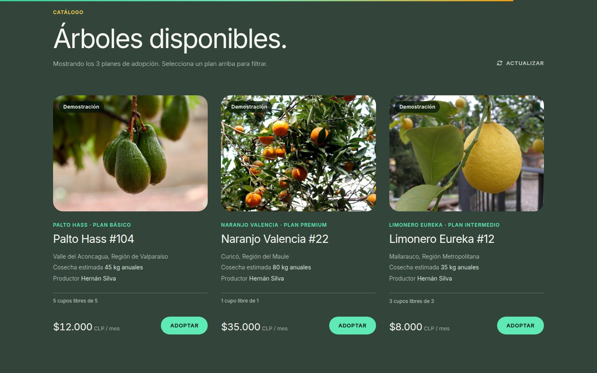
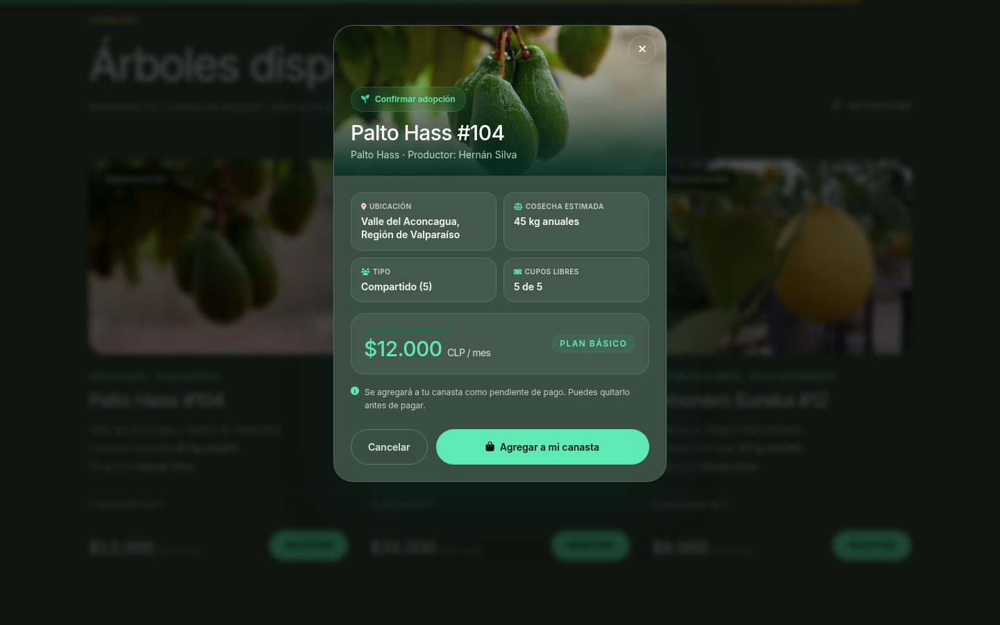
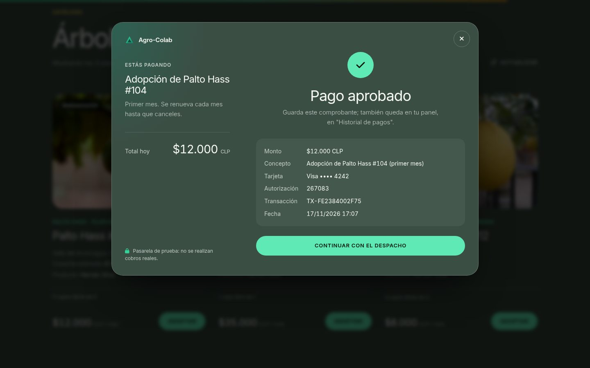
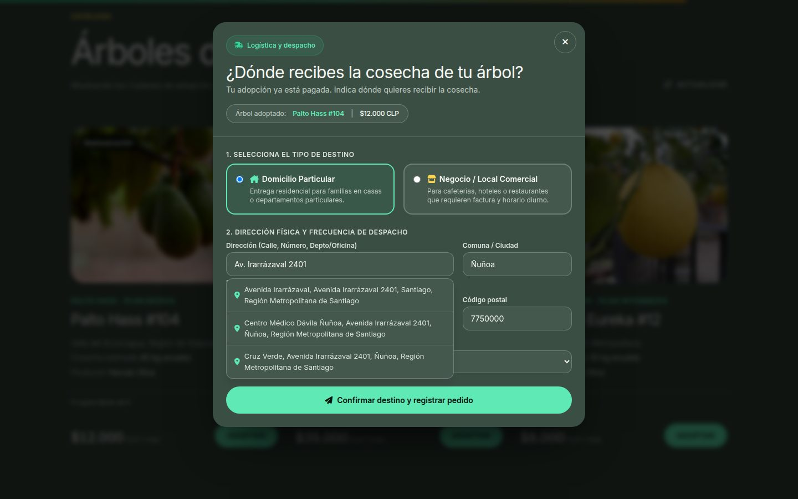
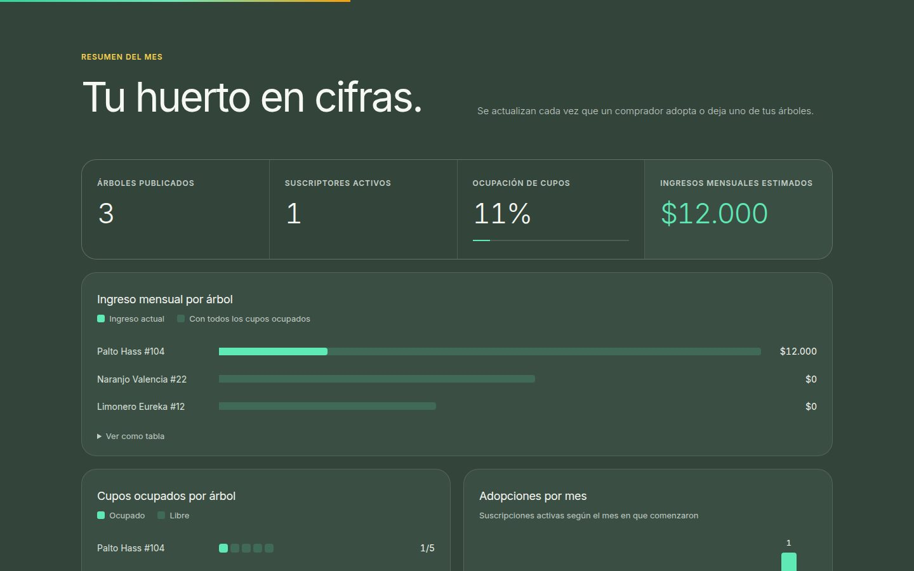
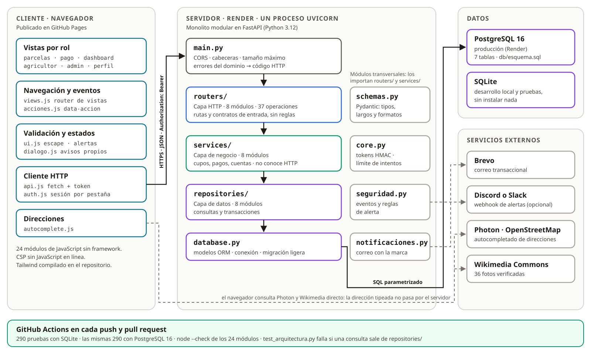
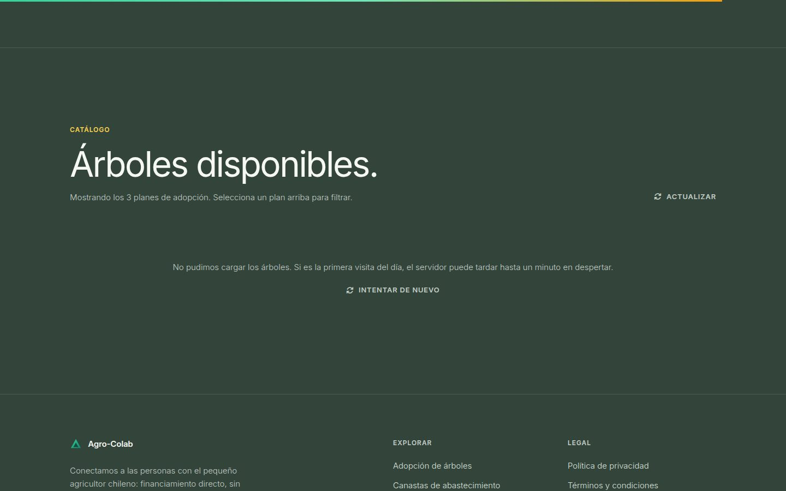

Sección 1
Introducción
Agro-Colab permite al pequeño agricultor cobrar por adelantado, sin intermediarios. Este informe reúne las dos últimas entregas: el servicio que sostiene esa promesa (Hito 2) y el producto que la cumple de punta a punta (Hito 3).
El pequeño agricultor chileno necesita capital antes de la temporada y suele terminar vendiendo su cosecha a intermediarios, que se quedan con buena parte del margen. Al mismo tiempo, el consumidor urbano quiere saber de dónde viene lo que come. En el Hito 1, Agro-Colab se propuso para las dos partes: el consumidor adopta un árbol frutal o contrata una canasta de cosecha, y paga por adelantado y directo al agricultor (Alveal et al., 2026).
Este documento describe lo que se construyó después, en pasado y sobre el código entregado en la rama principal del repositorio. La primera mitad corresponde al documento técnico del back end: trazabilidad con el Hito 1, arquitectura, tecnologías, contrato de la API, capas y persistencia. La segunda corresponde a la documentación final del producto: la interfaz conectada al servicio, el manejo de errores, las pruebas, la ejecución en otro equipo, la evolución de las decisiones y las limitaciones. Los anexos declaran el uso de inteligencia artificial y analizan los datos personales según la Ley 21.719.
1.1Mapa de la entrega
La Tabla 1 relaciona cada criterio de la rúbrica con la sección de este informe que lo responde y con la evidencia en el repositorio. Todas las rutas son relativas a la raíz de github.com/arrobaaas/agro-colab.
| Criterio | Qué evalúa | En este informe | Evidencia en el repositorio |
|---|---|---|---|
| Hito 2 · Documento técnico del back end y presentación | |||
| H2 A1 | Demostración de la API en vivo | Sección 6.4 · pág. | docs/api/AgroColab.postman_collection.json |
| H2 A2 | Justificación de las tecnologías | Sección 5 · pág. | backend/requirements.txt |
| H2 A3 | Decisión monolito o distribuido | Sección 4.2 · pág. | docs/diagramas/arquitectura.png |
| H2 B1 | Trazabilidad con el Hito 1 | Sección 2 · pág. | docs/informes/Informe_Hito1_Propuesta.pdf |
| H2 B2 | Diseño de la API REST | Sección 6 · pág. | docs/api/API.md · backend/tests/test_contrato_http.py |
| H2 B3 | Separación de responsabilidades y capas | Sección 7 · pág. | backend/routers/ · services/ · repositories/ · tests/test_arquitectura.py |
| H2 B4 | Persistencia y manejo de credenciales | Sección 8 · pág. | db/esquema.sql · db/modelo_datos.png · .env.example · .gitignore |
| H2 B5 | Referencias técnicas | Referencias · pág. | Documentación oficial citada en el cuerpo |
| Hito 3 · Producto funcional, repositorio, documentación y video | |||
| H3 A1 | Recorrido completo de punta a punta | Sección 3.2 · pág. | Producto publicado · docs/guias/MANUAL.md (sección 5) |
| H3 A2 | Integración efectiva por capas | Secciones 7 y 9.1 · pág. | frontend/js/api.js · backend/tests/test_arquitectura.py |
| H3 A3 | Validación, errores y estados | Sección 9 · pág. | backend/main.py · backend/schemas.py · tests/test_errores_inesperados.py |
| H3 A4 | Ejecución reproducible o despliegue | Sección 11 · pág. | README.md · docs/guias/MANUAL.md · arrobaaas.github.io/agro-colab |
| H3 A5 | Repositorio e historial de trabajo | Sección 11.3 · pág. | Historial, ramas y solicitudes de incorporación en GitHub |
| H3 B1 | Documento final completo | Este informe | docs/informes/Informe_Final_Hitos_2_y_3.pdf |
| H3 B2 | Arquitectura final y evolución de decisiones | Secciones 4 y 12 · pág. | docs/informes/BITACORA.md · docs/diagramas/ |
| H3 B3 | Manual de uso e instalación | Sección 11 y Anexo C · pág. | docs/guias/MANUAL.md · resumen en README.md |
| H3 B4 | Video promocional de 2 minutos | No aplica | Enlace en README.md (sección Video) · guion en docs/guias/GUION_VIDEO.md |
| H3 B5 | Uso de IA y datos personales | Anexos A y B · pág. | También en README.md |
Las cifras de rendimiento y concurrencia se midieron el 4 de noviembre de 2026 (Anexo D). Las pruebas, las capturas y la instalación limpia se repitieron el 17 de noviembre de 2026 sobre el código de esta entrega. Las capturas son del producto en ejecución, con datos ficticios.
Sección 2
Trazabilidad con el Hito 1
La promesa no cambió; cambió la forma de cumplirla. Cada cambio de esta sección responde a un error real encontrado al construir o a una exigencia de la promesa.
Siguen vigentes el problema, los usuarios, la arquitectura cliente-servidor en tres capas, la API REST en Python con FastAPI, la base relacional y los planes Básico, Intermedio y Premium. La desventaja asumida en el Hito 1 también se cumplió: FastAPI no trae ORM ni panel de administración, así que hubo que integrar SQLAlchemy y programar la seguridad y el panel. La Figura 1 muestra cómo se distribuyó el trabajo en el tiempo, y la Tabla 2 declara qué se movió.
| Qué se movió | Por qué | Impacto |
|---|---|---|
| Adoptar exige pagar. La ruta que adoptaba sin cobrar dio paso a la pasarela simulada. 26 oct | Adoptar sin pagar contradecía el financiamiento por adelantado. | Pago y cupo van en una sola transacción. Sin cupo, no hay cobro. |
| De SQLite a PostgreSQL en producción; SQLite sigue en local. 30 oct | En Render, SQLite perdía los datos en cada despliegue. | Los datos sobreviven a los reinicios. La integración continua prueba ambos motores. |
| Reserva atómica de cupos. Antes se contaba y luego se insertaba. 29 oct | Dos compras simultáneas veían el mismo cupo libre. | UPDATE condicional, índice único y restricción CHECK (sección 8.2). |
| Tokens firmados. El Hito 1 solo decía «verifica que el usuario esté autenticado». 29 oct | La versión inicial confiaba en el id enviado por el navegador. | HMAC-SHA256, expiración de 7 días y autorización por recurso. |
| Catálogo cerrado de 12 especies con 36 fotos verificadas. 21 oct | La trazabilidad prometida exige mostrar el árbol correcto. | El servidor rechaza especies o fotos ajenas, incluso en peticiones hechas a mano. |
| Sin vía asíncrona. El Hito 1 justificó FastAPI por su rendimiento asíncrono. | El acceso a datos es síncrono; FastAPI ejecuta esas rutas en un grupo de hilos (Ramírez, s.f.-a). | La elección se sostiene por Pydantic y la productividad (sección 5). |
| Contrato HTTP corregido. Los errores de negocio respondían 200. 4 nov | Una medición mostró que 10 de 17 errores llegaban como éxito. | Cada resultado usa su código (sección 6.5). |
Capas reales: routers/, services/ y repositories/. 4 nov | Había 89 líneas con consultas dentro de los routers. | Las reglas se comprueban con pruebas automáticas (sección 7.3). |
| Alcance agregado: verificación por correo, recuperación de contraseña, administración, monitoreo, pago único de la canasta y despacho. | Son exigencias de un sistema con cuentas, de la Ley 21.719 y de la entrega real de la cosecha. | 37 operaciones que mantener, compensadas con 290 pruebas. |
La Tabla 3 revisa, uno por uno, los compromisos que el Hito 1 dejó escritos. Seis están cumplidos y dos quedaron parciales; las limitaciones se explican en la sección 13.
| Compromiso del Hito 1 | Dónde está hoy | Estado |
|---|---|---|
| Mostrar el catálogo de árboles con sus planes | GET /api/arboles y la vista de catálogo, con filtro por plan | Cumplido |
| Verificar que el usuario esté autenticado | usuario_actual en core.py, en cada ruta protegida | Cumplido |
| Controlar los cupos de cada árbol: 5, 3 o exclusivo | reservar_cupo, con UPDATE condicional; el plan fija los cupos | Cumplido |
| Registrar la suscripción y descontar el cupo en la base | Una transacción junto con el pago | Cumplido |
| Mostrar un panel personal después de adoptar | Panel del comprador (Figuras 8 y 9) | Cumplido |
| Trazabilidad del origen | Productor, ubicación y foto verificada por árbol; código de seguimiento por pedido | Cumplido |
| Pago directo al productor | Pasarela simulada: el flujo existe, pero no mueve dinero | Simulado |
| Seguimiento del despacho | El pedido guarda un estado logístico, pero ese estado no avanza | Parcial |
Sección 3
El producto entregado
Un comprador adopta un árbol, paga, indica el despacho y encuentra su adopción después de recargar la página. El agricultor ve ese cupo ocupado y el ingreso que le genera.
3.1Qué hace y para quién
Agro-Colab es una aplicación web con tres roles. El comprador adopta un cupo de un árbol frutal concreto o contrata una canasta de abastecimiento, paga en una pasarela simulada e indica dónde recibir la cosecha. El agricultor publica sus árboles, elige el plan de cada uno y ve cuánto le genera cada árbol y quiénes lo financian. El administrador gestiona las cuentas. La interfaz se adapta al ancho de un celular; no se construyó una aplicación móvil nativa.
comprador@agrocolab.cl y agricultor@agrocolab.cl, contraseña 123 (Anexo C).3.2Flujo principal de punta a punta
El flujo principal es la adopción de un árbol, porque es el que cumple la promesa: el dinero del comprador financia un árbol concreto antes de la cosecha. Las Figuras 2 a 9 son capturas del producto en ejecución, tomadas el 17 de noviembre de 2026 sobre una base nueva. La Tabla 4 relaciona cada paso con la petición HTTP y con lo que queda guardado.

GET /api/arboles.






| # | El usuario | Petición | Qué ocurre en el servidor |
|---|---|---|---|
| 1 | Ingresa como comprador | POST /api/login → 200 | Compara el hash bcrypt y entrega un token firmado de 7 días |
| 2 | Abre el catálogo (Fig. 2) | GET /api/arboles → 200 | Lee los árboles con sus cupos ocupados |
| 3 | Agrega un árbol a la canasta (Fig. 3 y 4) | GET /api/suscripciones/usuario/{id} | Comprueba que no lo haya adoptado antes; la canasta vive en el navegador hasta pagar |
| 4 | Paga con una tarjeta de prueba (Fig. 5 y 6) | POST /api/pagos/canasta → 201 | Fija el monto, reserva el cupo con un UPDATE condicional y guarda suscripción y pago en una transacción |
| 5 | Indica el despacho (Fig. 7) | POST /api/pedidos → 201 | Valida dirección, celular y código postal; genera un código de seguimiento único |
| 6 | Abre su panel (Fig. 8) | GET suscripciones, pedidos y pagos | Devuelve solo los datos del dueño del token |
| 7 | Recarga la página (Fig. 9) | Las mismas lecturas | El árbol sigue ahí: quedó en PostgreSQL, no en el navegador |
El recorrido se comprobó también desde el otro lado: al entrar como agricultor, el árbol adoptado aparece con un cupo ocupado y $12.000 de ingreso mensual (Figura 10). El dato que escribió el comprador llegó al panel de otro rol sin intervención manual.


3.3Otros recorridos implementados
- Cuenta: registro con consentimiento explícito y verificación por correo, inicio de sesión, recuperación de contraseña con código de un solo uso, edición del perfil, descarga de los datos propios y eliminación de la cuenta con la contraseña actual.
- Comprador: canastas de abastecimiento (con RUT validado en el plan B2B), modificación del destino de un pedido y cancelación de una suscripción, que libera el cupo.
- Agricultor: publicación desde el catálogo cerrado, edición y eliminación de árboles, gráficos de ingresos, ocupación y adopciones por mes, y expulsión de un suscriptor.
- Administrador: listado de cuentas con búsqueda y filtro, corrección de datos, verificación manual, cambio de contraseña y eliminación. La cuenta de administrador solo se crea desde variables del servidor.
Sección 4
Arquitectura y decisión monolito o distribuido
Decisión: monolito modular. Pagar y reservar un cupo deben ocurrir juntos o no ocurrir, y una sola transacción de la base lo garantiza sin coordinar servicios.
4.1Vista general
La Figura 12 muestra los componentes con sus nombres reales en el repositorio. El cliente es una aplicación de página única en JavaScript, sin framework, publicada en GitHub Pages. El servidor es un solo proceso de FastAPI en Render, organizado en tres capas, que guarda los datos en PostgreSQL 16; en local usa SQLite sin instalar nada. El servidor solo llama a Brevo, para el correo, y a un webhook opcional de alertas. El autocompletado de direcciones y las fotos del catálogo van directo del navegador a Photon y a Wikimedia Commons, así que la dirección tipeada no pasa por el servidor.

docs/diagramas/arquitectura.png.4.2Monolito frente a servicios
Fowler (2015) sostiene que conviene partir con un monolito, porque los límites correctos entre servicios recién se conocen con el uso. La Tabla 5 aplica los cuatro criterios de la pauta al caso.
| Criterio | Situación del proyecto | Con monolito | Con servicios |
|---|---|---|---|
| Carga esperada | Decenas de usuarios. En local, entre 104 y 214 lecturas por segundo con 10 clientes (sección 10.2). | Un proceso alcanza, y los límites de intentos viven en la base, así que se pueden sumar procesos. | Ninguna parte tiene una carga distinta que justifique escalarla aparte. |
| Tamaño del equipo | 3 integrantes y un semestre. | Un repositorio y un conjunto de pruebas. | 8 módulos serían demasiados servicios para 3 personas. |
| Costo de operación | Plan gratuito: el servicio se detiene tras 15 minutos sin tráfico (Render, s.f.). | Un servicio web y una base. | Varios servicios detenidos por separado suman esperas en cadena. |
| Complejidad de despliegue | Pago y cupo son una sola operación de negocio. | Una transacción local (sección 8.2). | Exigiría coordinar una transacción distribuida. |
Un error grave detiene todo el servicio y no se puede escalar una parte por separado. Además, nada en el proceso impide que un módulo lea cualquier tabla: esa disciplina la imponen las pruebas de la sección 7.3, no la infraestructura.
Cuándo se revisaría esta decisión
Sección 5
Justificación de las tecnologías
Cada pieza se contrastó con una alternativa, usando los criterios del Hito 1: curva de aprendizaje, capacidad frente a peticiones simultáneas, y comunidad y documentación.
La Tabla 6 resume, para cada elección, la alternativa evaluada, el motivo y el costo que el equipo acepta. El motivo que cambió respecto del Hito 1 es el de FastAPI: su valor real resultó ser la validación tipada y la división por dominios, no el rendimiento asíncrono.
| Pieza | Alternativa | Por qué se eligió | Costo asumido |
|---|---|---|---|
| Python 3.12 lenguaje | Node.js | Sintaxis accesible para el equipo y validación tipada con anotaciones. Node.js habría unificado el lenguaje con el cliente. | Dos lenguajes; los esquemas no se comparten con el cliente. |
| FastAPI framework | Express, Django | Integra Pydantic, genera /docs (Ramírez, s.f.-b) y divide la API por dominio (Ramírez, s.f.-c). | Sin ORM, autenticación ni panel incluidos. |
| Pydantic validación | Validación manual | Tipos y largos se declaran una vez, y lo inválido se rechaza con 422 antes de entrar a la ruta (Pydantic, s.f.). | Su mensaje por defecto no servía al usuario: se escribió un manejador en main.py. |
| PostgreSQL 16 producción | SQLite | Persiste fuera del servidor y documenta su comportamiento concurrente (PostgreSQL Global Development Group, s.f.). | Servicio externo, variable de conexión y pruebas en dos motores. |
| SQLite local | PostgreSQL local | Se levanta sin instalar nada: basta con no definir DATABASE_URL. | Diferencias con producción; por eso la integración continua prueba ambos. |
| SQLAlchemy 2 ORM | SQL a mano | El mismo código en ambos motores y consultas parametrizadas (SQLAlchemy, s.f.). | Curva de aprendizaje, y una migración propia porque create_all no altera tablas. |
| bcrypt y HMAC-SHA256 seguridad | JWT con biblioteca | bcrypt está diseñado para contraseñas (Python Cryptographic Authority, s.f.); HMAC es estándar (Krawczyk et al., 1997) y viene en Python (Python Software Foundation, s.f.). | Código propio de tokens, un punto sensible que exige pruebas. |
| JavaScript sin framework cliente | React | Sin paso de compilación: GitHub Pages publica los archivos tal cual, y la política de contenido prohíbe JavaScript en línea. | Router de vistas y delegación de eventos programados a mano. |
| Render y GitHub Pages hospedaje | Servidor propio | Planes gratuitos suficientes para un prototipo, publicados con un push. | La primera petición tras la inactividad demora hasta un minuto. |
Sección 6
Diseño de la API REST
La API cubre crear, leer, actualizar y borrar en dos recursos completos, persiste en una base real y responde cada resultado con su código HTTP, incluidos los errores.
6.1Convenciones y mapa de recursos
Las rutas usan sustantivos y los verbos de HTTP según su semántica (Fielding, 2000; Fielding et al., 2022). La excepción declarada son las acciones de cuenta, como /api/login. La Tabla 7 distribuye las 37 operaciones por recurso y verbo.
status y mensaje en lenguaje de usuario.Authorization: Bearer. El usuario sale del token, nunca del cuerpo ni de la ruta./api/v2/, conviviendo con el anterior hasta migrar al cliente.| Recurso | Módulo | POST | GET | PUT | DELETE | Total |
|---|---|---|---|---|---|---|
| Árboles CRUD completo | arboles | 1 | 2 | 1 | 1 | 5 |
| Pedidos CRUD completo | pedidos | 1 | 2 | 1 | 1 | 5 |
| Cuentas y sesión | usuarios | 7 | 3 | 1 | 1 | 12 |
| Suscripciones | suscripciones | · | 2 | · | 2 | 4 |
| Administración | admin | · | 2 | 1 | 1 | 4 |
| Pagos | pagos | 2 | 2 | · | · | 4 |
| Monitoreo | monitoreo | 1 | 1 | · | · | 2 |
| Especies | especies | · | 1 | · | · | 1 |
| Total | 12 | 15 | 4 | 6 | 37 |
6.2Contrato completo
La Tabla 8 es el contrato tal como lo implementa el código. Se genera desde docs/api/API.md, y test_entregables.py falla si ese archivo deja de coincidir con las rutas reales. Los parámetros son los de ruta, entre llaves; ninguna ruta usa parámetros de consulta. Las rutas con cuerpo o parámetro numérico responden 422 ante datos inválidos.
| Verbo | Ruta | Acceso | Cuerpo | Éxito | Errores |
|---|
6.3Reglas de los cuerpos y ejemplo
La Tabla 9 resume las reglas de validación de cada esquema de Pydantic. Ningún cuerpo trae montos: el precio de un árbol o de un plan lo fija siempre el servidor.
| Esquema | Campos y reglas |
|---|
6.4Demostración real de crear, leer, actualizar y borrar
La Figura 14 reproduce, con el cuerpo de la respuesta abreviado, la secuencia de la demostración en vivo sobre el recurso pedidos, ejecutada el 17 de noviembre de 2026 contra el servicio local. Después de borrar, leer el mismo pedido responde 404: el dato estaba guardado y dejó de estarlo. Las mismas peticiones están listas para importar en docs/api/AgroColab.postman_collection.json, y test_entregables.py ejecuta esa colección completa en cada integración.
Content-Type.6.5Errores: de 200 a su código correcto
Medir la API en el Hito 2 mostró un defecto que la interfaz ocultaba: el cliente leía el campo status, y por eso 10 de 17 errores respondían 200 sin que nadie lo notara. Eso contradice la semántica de HTTP (Fielding et al., 2022) y engaña a cualquier otro consumidor. Se corrigió, y las mismas 29 peticiones dan hoy el resultado de la Figura 15. La Tabla 10 detalla los 17 escenarios de error.
| Escenario | Petición | Antes | Ahora |
|---|---|---|---|
| Sin token | POST /api/arboles | 401 | 401 |
| Token falso | POST /api/arboles | 401 | 401 |
| Datos de otro usuario | GET /api/suscripciones/usuario/2 | 403 | 403 |
| Panel de administración sin rol | GET /api/admin/usuarios | 403 | 403 |
| Árbol con 0 cupos | POST /api/arboles | 422 | 422 |
| Ruta inexistente | GET /api/nada | 404 | 404 |
| Verbo no admitido | PATCH /api/arboles | 405 | 405 |
| Contraseña incorrecta | POST /api/login | 200* | 401 |
| Comprador publica un árbol | POST /api/arboles | 200* | 403 |
| Especie inexistente | POST /api/arboles | 200* | 422 |
| Editar árbol inexistente | PUT /api/arboles/9999 | 200* | 404 |
| Adoptar dos veces | POST /api/pagos | 200* | 409 |
| Tarjeta rechazada | POST /api/pagos | 200* | 402 |
| Pedido sin pago | POST /api/pedidos | 200* | 409 |
| Editar pedido inexistente | PUT /api/pedidos/9999 | 200* | 404 |
| Cancelar pedido ya cancelado | DELETE /api/pedidos/1 | 200* | 404 |
| Cuenta demo borra su árbol | DELETE /api/arboles/4 | 200* | 403 |
RFC 9110 reserva el código 402 para uso futuro (Fielding et al., 2022), aunque es la convención habitual de las pasarelas. El equipo lo adoptó y lo declara en el contrato: el cuerpo trae status: rechazado y el comprobante. test_contrato_http.py (28 pruebas) impide que este defecto vuelva.
Sección 7
Separación de responsabilidades y capas
El ruteo, el negocio y el acceso a datos viven en carpetas separadas, y una prueba automática falla si alguien vuelve a mezclarlos.
7.1Qué archivo corresponde a cada capa
La Figura 16 asigna cada carpeta del repositorio a su capa. La regla se definió antes de mover el código: el controlador no lleva lógica de negocio, y las consultas viven solo en la capa de datos.
7.2Recorrido completo de una petición: pagar la canasta
Pagar la canasta es la operación más delicada del sistema, porque el cobro y el cupo tienen que ocurrir juntos o no ocurrir. Este es su recorrido por las capas:
- Presentación.
pago.jsvalida en el navegador el número, el vencimiento y el CVV, y llama aapi.pagarCanasta().api.jsagregaAuthorization: Bearery envía la lista de productos, nunca los montos. - Entrada.
main.pyaplica CORS, rechaza cuerpos de más de 64 KB y agrega las cabeceras de seguridad. - HTTP.
routers/pagos.pyrecibePagoCanastaRequest, que Pydantic valida. Obtiene al usuario desde el token conusuario_actualy llama al servicio. Un token inválido responde 401 antes de llegar aquí. - Negocio.
services/pagos.pagar_canastarechaza árboles repetidos, calcula el precio de cada producto desde la base, valida la tarjeta de prueba y, si se aprueba, llama areservar_cupopor cada árbol. - Datos.
repositories/arboles.reservar_cupoejecutaUPDATE arboles SET cupos_ocupados = cupos_ocupados + 1 WHERE id = ? AND cupos_ocupados < cupos_totales. Si no actualiza ninguna fila, no hay cupo. - Transacción. Si un árbol no tiene cupo, el servicio deshace todo y responde 409: no se cobra nada. Si todos lo tienen, agrega los pagos y confirma una sola vez.
- Respuesta. El router devuelve 201 con el comprobante. Un rechazo de la tarjeta se convierte en 402 y la interfaz muestra el motivo (Figura 18).
7.3Cómo se hacen cumplir las capas
Una primera medición encontró 89 líneas con operaciones de base de datos dentro de los routers, y lógica de negocio en el controlador. Se separó el código en tres capas, y las pruebas que miran la API desde afuera protegieron el cambio. Para que no se deshaga, test_arquitectura.py analiza el árbol sintáctico de cada archivo en cada integración y comprueba las cinco reglas de la Tabla 11, con 78 pruebas.
| Regla | Qué falla si se rompe |
|---|---|
| Las consultas viven solo en la capa de datos | Una llamada como db.query en routers, servicios, core.py o seguridad.py |
| Los routers no saltan la capa de negocio | Un router que importa repositories o SQLAlchemy |
| Los routers no contienen reglas | Un if, un ciclo o un try dentro de una ruta |
| El negocio no conoce HTTP | Un servicio que importa FastAPI, Starlette o un router |
| Los datos no dependen de capas superiores | Un repositorio que importa servicios, routers o core.py |
Sección 8
Persistencia y manejo de credenciales
Siete tablas con claves, relaciones y tipos, un script que crea la base desde cero, y ninguna credencial dentro del repositorio.
8.1Modelo de datos
La Figura 17 es el modelo final, generado desde los modelos de backend/database.py con db/generar_diagrama.py, así que coincide con el código. suscripciones es la relación muchos a muchos entre usuarios y arboles, y su índice único impide que una persona ocupe dos cupos del mismo árbol. pagos.arbol_id y pagos.pedido_id no son claves foráneas a propósito: el comprobante debe sobrevivir si el agricultor elimina el árbol. eventos_seguridad e intentos_acceso son registros de auditoría y de límites, y no dependen de que la cuenta siga existiendo.

db/modelo_datos.png.El script db/esquema.sql crea la base desde cero en PostgreSQL (createdb agrocolab && psql -d agrocolab -f db/esquema.sql). Se genera desde los mismos modelos con db/generar_esquema.py, y test_entregables.py falla si se desactualiza. La aplicación también crea las tablas sola al arrancar, con dos cuentas de demostración y tres árboles de ejemplo.
8.2Reserva atómica de cupos
La promesa más delicada es que un cupo pagado exista de verdad. Hasta octubre, la API contaba los cupos libres y después insertaba la suscripción, y dos compras simultáneas podían quedarse con el mismo cupo. La solución vive en la base, no en una revisión previa, y tiene tres barreras:
uq_suscripcion_usuario_arbol frena la doble suscripción aunque dos peticiones lleguen a la vez.ck_arboles_cupos impide que los cupos ocupados queden negativos o superen el total.En la medición del Hito 2, 500 compras simultáneas del último cupo produjeron una sola aprobación (Anexo D). Hoy hay pruebas de regresión para esa carrera, para liberar un cupo dos veces, para reclamar el mismo pago en paralelo y para que eliminar una cuenta devuelva sus cupos.
8.3Credenciales
Ninguna credencial está en el código ni en el historial (Wiggins, s.f.). La Tabla 12 resume cómo se manejan.
| Pieza | Cómo se maneja |
|---|---|
.env.example en la raíz | Todas las variables, con valores de ejemplo y sin datos reales. Con esos valores el proyecto funciona en local sin servicios externos. |
.gitignore | Excluye .env, .env.*, la base SQLite local y los entornos virtuales. |
Clave de firma AGROCOLAB_SECRET | El servidor rechaza la clave de ejemplo y cualquiera de menos de 32 caracteres, y usa una aleatoria con aviso en el registro. |
| Producción (Render) | DATABASE_URL, la clave de firma, la del correo y la del administrador se definen como variables del servicio, nunca en archivos. |
| Modo de desarrollo | El servidor se niega a arrancar en modo desarrollo si detecta una base de producción o el entorno de Render. |
| Si se filtra una credencial | docs/guias/INCIDENTES.md indica qué rotar en cada caso: borrarla del archivo no basta. |
Sección 9
Integración, validación, errores y estados
La interfaz consume el contrato de la sección 6, valida antes de enviar, muestra los estados de carga, vacío y error en cada pantalla, y traduce cada fallo a un mensaje para el usuario.
9.1Integración entre la interfaz y el servicio
El cliente HTTP, frontend/js/api.js, es el único módulo que habla con el servidor. Elige la URL según dónde corre la página (la API local en localhost, la de Render en GitHub Pages), agrega el token, espera hasta 75 segundos (Render tarda hasta un minuto en despertar) y devuelve el cuerpo, que siempre trae status y mensaje. Como todos los errores tienen esa forma, la interfaz muestra el mensaje del servidor tal cual. El token se guarda en sessionStorage y vive solo mientras la pestaña está abierta; si el servidor responde que expiró, la interfaz borra la sesión y vuelve al inicio de sesión.
9.2Validación en el cliente y en el servidor
Cada entrada se valida dos veces. En el navegador, para responder rápido: atributos de HTML y funciones propias, como el dígito verificador del RUT o el formato de la tarjeta. En el servidor, porque el navegador se puede saltar: schemas.py declara tipos, largos y formatos (Tabla 9), y los servicios aplican las reglas de negocio. Un dato inválido recibe 422 con un mensaje que nombra el campo, por ejemplo «Revisa el código postal: el valor no es válido». Los textos con < o > se rechazan en el servidor, y todo dato que la interfaz inserta como HTML pasa por una función de escape.
9.3Estados de carga, vacío y error
| Pantalla | Cargando | Vacío | Error |
|---|---|---|---|
| Catálogo | «Cargando árboles disponibles...» | «No hay árboles disponibles por ahora», o para el plan elegido | Mensaje que explica la espera de Render y botón «Intentar de nuevo» (Figura 19) |
| Panel del comprador | «Cargando tu panel...» | «Todavía no tienes árboles ni planes», con acceso al catálogo | «No se pudo cargar tu panel. Intenta nuevamente.» |
| Panel del agricultor | «Cargando tus árboles...» | «Todavía no publicas árboles» | «No se pudieron cargar tus árboles. Intenta nuevamente.» |
| Administración | «Cargando cuentas...» | En el detalle: «Todavía no publica árboles» | «No hay conexión con el servidor...» |
| Pago | «Procesando tu pago...» | No aplica | «Pago no realizado», con el motivo y la opción de usar otra tarjeta (Figura 18) |
| Selector de especies | «Cargando catálogo...» | No aplica | «No se pudo cargar el catálogo. Revisa tu conexión y recarga la página.» |


9.4Errores no previstos
Para lo que no se espera hay una red de seguridad en cada capa (Tabla 14). Ninguna respuesta expone tablas, SQL ni trazas: el detalle queda en el registro del servidor o en la consola del navegador. Los casos del servidor tienen pruebas en test_errores_inesperados.py, que fallaban antes del cambio; los del navegador se probaron en Chrome con el producto corriendo.
| Situación | Respuesta | Qué ve el usuario |
|---|---|---|
| La base de datos no responde | 503 | «No pudimos conectarnos con la base de datos. Intenta nuevamente en unos segundos.» |
| Dos peticiones chocan en un índice único | 409 | «No se pudo guardar porque el dato choca con otro registro...» |
| Fallo de programación en el servidor | 500 | «Ocurrió un error inesperado. Intenta nuevamente en unos minutos.» |
| El servidor no responde en 75 s | Sin respuesta | «El servidor tardó demasiado en responder...» |
| Sin conexión a internet | Sin respuesta | «No hay conexión con el servidor. Revisa tu conexión a internet...» |
| El token venció | 401 | «Tu sesión expiró», y la aplicación vuelve al inicio de sesión |
| Un botón falla sin control | No aplica | «Algo salió mal al realizar esta acción. Recarga la página e intenta nuevamente.» |
Sección 10
Calidad, rendimiento y seguridad
Las pruebas protegen el contrato, las capas y los errores en dos motores de base de datos, y una medición reemplazó el supuesto de carga por un dato, con sus límites declarados.
10.1Pruebas automatizadas
El backend tiene 290 pruebas con pytest, que miran la API desde afuera con una base temporal y sin enviar correos. GitHub Actions las ejecuta en cada push y en cada solicitud de incorporación, dos veces: con SQLite y con PostgreSQL 16 (GitHub, s.f.). En el mismo proceso, node --check revisa la sintaxis de los 24 módulos del frontend. En la medición del Hito 2, la cobertura de líneas del back end fue de 91 %.
| Archivo | Pruebas | Qué protege |
|---|---|---|
test_auditoria.py | 92 | Un bloque por hallazgo de la auditoría de seguridad (AC-01 a AC-44) |
test_arquitectura.py | 78 | Las cinco reglas de capas de la Tabla 11 |
test_contrato_http.py | 28 | El código de cada resultado y la forma única de los errores |
test_despacho.py | 18 | Celular con código de país y código postal del despacho |
test_cuentas.py | 16 | Registro, verificación, login, tokens alterados y recuperación de contraseña |
test_seguridad.py | 13 | Autorización por recurso, cabeceras, XSS e imágenes fuera del catálogo |
test_pagos.py | 10 | Monto fijado por el servidor, rechazos y tarjeta nunca guardada |
test_canasta.py | 9 | Un solo cobro por canasta, y nada cobrado si un producto falla |
test_admin.py | 7 | Acceso exclusivo del administrador y cuentas protegidas |
test_errores_inesperados.py | 7 | Base caída (503), choque en la base (409) y fallo no previsto (500), con CORS |
test_entregables.py | 5 | API.md, .env.example y esquema.sql iguales al código; ejecuta la colección de Postman |
test_base_datos.py | 4 | Elección de SQLite o PostgreSQL según las variables de entorno |
test_cupos_al_eliminar.py | 3 | Eliminar una cuenta devuelve sus cupos |
10.2Rendimiento
La Tabla 16 resume 2.090 peticiones contra el servicio local con 4 procesos y PostgreSQL 16.2, medidas el 4 de noviembre (Anexo D). Con 10 clientes, las lecturas sostienen entre 104 y 214 peticiones por segundo, y los pagos, 131. Con 50 clientes aparece la cola: el percentil 95 supera los 450 ms. Para decenas de usuarios el margen es amplio, lo que respalda el monolito de la sección 4.
| Operación | 1 cliente | 10 clientes | 50 clientes |
|---|---|---|---|
| GET /api/arboles | 17,8 | 104,0 | 127,2 |
| GET /api/pedidos | 21,9 | 214,0 | 199,8 |
| POST /api/pagos | 18,1 | 130,8 | no medido |
El cliente y el servidor corrieron en el mismo equipo. Las cifras comparan operaciones y muestran la tendencia, pero no predicen el plan gratuito de Render, que tiene otros recursos y otra red.
10.3Seguridad
| Amenaza | Control | Evidencia |
|---|---|---|
| Robo de contraseñas | bcrypt; cambiarla exige la actual y cierra las demás sesiones | test_cuentas.py |
| Suplantación | Token HMAC-SHA256 de 7 días, ligado a la versión de la sesión | test_cuentas.py |
| Acceso a datos ajenos | Autorización por recurso; el usuario sale del token | test_seguridad.py |
| Fuerza bruta | Límite por IP y por cuenta, guardado en la base | test_seguridad.py; en la medición, 50 de 60 intentos recibieron 429 |
| Manipulación de precios | El monto lo fija el servidor | test_pagos.py |
| XSS | Rechazo de < y >, escape en el cliente y CSP sin unsafe-inline | test_seguridad.py |
| Exposición de tarjetas | Solo se guardan la marca y los 4 últimos dígitos | test_pagos.py |
| Ataques sin detectar | Eventos en la base y en el registro, con alertas por reglas | Panel de monitoreo |
El 10 de noviembre se cerró una auditoría completa del sistema, con hallazgos numerados de AC-01 a AC-44: cuentas de demostración mezcladas con datos reales, una cuenta de administrador que se podía secuestrar registrando antes su correo, y registros que guardaban el correo y la IP completos, entre otros. Cada hallazgo corregido quedó con su prueba en test_auditoria.py.
Sección 11
Ejecución, despliegue y repositorio
El producto está publicado y también se levanta en otro equipo siguiendo el archivo de instrucciones, sin credenciales ni servicios externos.
11.1Dos formas de usarlo
uvicorn main:app --port 8000 --env-file ../.env en backend/ y python3 -m http.server 3000 en frontend/. Pasos completos en docs/guias/MANUAL.md.Con los valores de .env.example, la base SQLite se crea sola con las cuentas de demostración y tres árboles de ejemplo, y el código de verificación del registro aparece en la consola en vez de enviarse por correo.
11.2Prueba en un equipo limpio
El 17 de noviembre se instaló el proyecto como lo haría un tercero: se clonó el repositorio en una carpeta vacía y se siguieron las instrucciones al pie de la letra. El servicio se levantó al primer intento. Después se ejecutó el flujo principal contra esa instalación: inicio de sesión, pago aprobado (201), suscripción visible, segundo pago del mismo árbol rechazado (409), reinicio del servidor y nueva lectura, que devolvió el árbol adoptado. La prueba encontró tres trabas no documentadas, que quedaron en el manual con su solución:
- En Linux el comando
pythonno existe: se usapython3. - Si quedó un servidor anterior abierto, el puerto 8000 está ocupado.
- El inicio de sesión falla si se elige el rol equivocado, aunque el correo y la contraseña sean correctos.
11.3Repositorio e historial
El trabajo se organizó en ramas por funcionalidad, unidas a la rama principal mediante solicitudes de incorporación (más de 50 hasta noviembre), cada una revisada por la integración continua antes de unirse. El repositorio no contiene credenciales ni carpetas de dependencias, y los mensajes de los commits describen el cambio. La documentación está ordenada por tipo en docs/, con un índice en docs/README.md.
Sección 12
Evolución de las decisiones
La bitácora completa tiene 24 decisiones con fecha, alternativas, motivo y lo que salió mal. Esta sección resume las que más cambiaron el producto.
La Tabla 18 sigue el orden cronológico; las fechas salen del historial de Git. El detalle de cada decisión está en docs/informes/BITACORA.md.
| Fecha | Decisión | Qué salió mal | Cómo se resolvió |
|---|---|---|---|
| 09-sep | FastAPI, por su rendimiento asíncrono | Ninguna ruta terminó usando async | Se sostuvo por Pydantic y la división por dominios |
| 06-oct | SQLite con SQLAlchemy, en vez de listas en memoria | En Render la base se borraba en cada despliegue | PostgreSQL en producción desde el 30 de octubre |
| 19-oct | Publicar en GitHub Pages y Render | Para recrear la base se publicó /api/admin/reiniciar-bd sin autenticación | Se eliminó el 27 de octubre; la base se recrea con db/esquema.sql |
| 21-oct | Catálogo cerrado de especies | Con fotos subidas por el agricultor, cualquier foto podía representar a cualquier árbol | 12 especies y 36 fotos verificadas |
| 26-oct | Adoptar exige pagar | La ruta original adoptaba sin cobrar | Pago y cupo en una sola transacción |
| 29-oct | Tokens firmados y autorización por recurso | La API confiaba en el id que enviaba el navegador | El usuario sale del token; lo ajeno responde 403 o 404 |
| 29-oct | Reserva atómica de cupos | Dos compras simultáneas podían quedarse con el último cupo | UPDATE condicional, índice único y CHECK |
| 04-nov | Un código HTTP por resultado | 10 de 17 errores llegaban como 200 | Contrato en API.md protegido por 28 pruebas |
| 04-nov | Capas reales | 89 líneas con consultas dentro de los routers | Tres capas y 78 pruebas de arquitectura |
| 10-nov | Auditoría y pago único de la canasta | Cuentas demo mezcladas con datos reales; un cobro por producto | AC-01 a AC-44 corregidos con pruebas; POST /api/pagos/canasta |
| 17-nov | Revisión del borrado de cuentas | El árbol mostraba su cupo libre, pero el pago respondía «Cupos agotados» para siempre | El borrado devuelve los cupos; 3 pruebas nuevas |
| 17-nov | Errores no previstos | Base caída respondía 500; una API colgada dejaba «Cargando...» para siempre | 503 y 409 claros, tiempo límite y red de seguridad (sección 9.4) |
| 17-nov | Instalación en un equipo limpio | Tres trabas sin documentar y un error técnico a la vista del usuario | Manual de uso e instalación y nuevo estado de error del catálogo |
Sección 13
Limitaciones declaradas
El equipo prefiere declarar lo que falta a que se descubra en la revisión. Cada limitación tiene su consecuencia y su corrección.
| Limitación | Consecuencia | Cómo se corregiría |
|---|---|---|
| Pasarela de pago simulada | No mueve dinero y solo acepta tarjetas de prueba. El pago directo al productor está demostrado como flujo, no como transferencia. | Integrar una pasarela real, lo que reabre la decisión de arquitectura. |
| El estado logístico no avanza | Todo pedido queda «En coordinación con huerto de origen»: nadie registra el despacho ni la entrega. | Un flujo del agricultor para marcar despacho y entrega, con aviso al comprador. |
| Espera inicial en Render | Tras 15 minutos sin uso, la primera petición tarda hasta un minuto. | Plan pagado, si el producto sale de la etapa académica. |
| Canasta en el navegador | Lo que se agrega y no se paga se pierde al cambiar de dispositivo. | Guardar la canasta en el servidor. |
| Dos fuentes para los cupos ocupados | La API cuenta suscripciones y la reserva usa una columna. Hoy coinciden y una prueba lo comprueba, pero toda operación nueva debe actualizar ambas. | Leer siempre la columna, o mantenerlas iguales en la propia base. |
| Correo dentro de la petición | Un envío lento retrasa el registro hasta 10 segundos. | Una cola de tareas. |
| Restricciones y migraciones | Columnas sin NOT NULL, y una migración propia que solo agrega columnas. | Migraciones versionadas. |
| Medición de carga solo en local | Las cifras de la sección 10.2 no predicen Render. | Medir en el entorno publicado. |
| Sin aplicación nativa | En el celular se usa el sitio web adaptado. | Instalar el sitio como aplicación web progresiva. |
Sección 14
Conclusión
La promesa del Hito 1 funciona de punta a punta: un comprador adopta un árbol, paga, indica el despacho y encuentra su adopción después de recargar; el agricultor ve ese cupo ocupado y el ingreso que le genera. El motor del Hito 2 lo sostiene con 37 operaciones, cada resultado con su código HTTP, persistencia real en PostgreSQL y credenciales fuera del código. La arquitectura en capas dibujada en septiembre existe en el código, y 290 pruebas en dos motores impiden que se degrade. El producto está publicado y se levanta en otro equipo siguiendo las instrucciones.
La pasarela es simulada, el estado del despacho no avanza y la base depende todavía de la aplicación para algunas restricciones. Ninguna limitación rompe el flujo principal, pero las dos primeras separan al prototipo de un servicio que pueda cobrar y entregar de verdad.
Qué aprendimos
Los errores que más enseñaron no se veían en la pantalla: un cupo que se podía vender dos veces, una base que se borraba en cada despliegue, una API que creía en el id que le mandaban, un borrado que fallaba solo en PostgreSQL y una cuenta eliminada que dejaba su cupo ocupado para siempre. Todos se encontraron midiendo o probando, no mirando. También aprendimos el costo de programar sin un contrato cerrado: hubo que corregir los códigos HTTP y el cliente a la vez. Y una decisión puede sostenerse por motivos distintos a los que se creía: FastAPI no se justificó por su rendimiento asíncrono, sino por su validación. Por último, la prueba en un equipo limpio mostró que lo que el equipo daba por sabido era justamente lo que faltaba documentar.
Referencias
Alveal, J., Gonzalez, M., y Reyes, N. (2026). Agro-Colab: propuesta de valor y arquitectura (Hito 1) [Informe de asignatura]. Universidad Mayor. https://github.com/arrobaaas/agro-colab
Fielding, R. T. (2000). Architectural styles and the design of network-based software architectures [Tesis doctoral, University of California, Irvine]. https://ics.uci.edu/~fielding/pubs/dissertation/top.htm
Fielding, R., Nottingham, M., y Reschke, J. (Eds.). (2022). HTTP semantics (RFC 9110). Internet Engineering Task Force. https://www.rfc-editor.org/rfc/rfc9110
Fowler, M. (2015, 3 de junio). MonolithFirst. martinfowler.com. https://martinfowler.com/bliki/MonolithFirst.html
GitHub. (s.f.). GitHub Actions documentation. https://docs.github.com/en/actions
Krawczyk, H., Bellare, M., y Canetti, R. (1997). HMAC: Keyed-hashing for message authentication (RFC 2104). Internet Engineering Task Force. https://www.rfc-editor.org/rfc/rfc2104
Ley N.° 21.719. Regula la protección y el tratamiento de los datos personales y crea la Agencia de Protección de Datos Personales. (2024). Biblioteca del Congreso Nacional de Chile. https://www.bcn.cl/leychile/navegar?idNorma=1209272
PostgreSQL Global Development Group. (s.f.). Transaction isolation. En PostgreSQL 16 documentation. https://www.postgresql.org/docs/16/transaction-iso.html
Pydantic. (s.f.). Pydantic documentation. https://docs.pydantic.dev/latest/
Python Cryptographic Authority. (s.f.). bcrypt. Python Package Index. https://pypi.org/project/bcrypt/
Python Software Foundation. (s.f.). hmac: Keyed-hashing for message authentication. En Python documentation. https://docs.python.org/3/library/hmac.html
Ramírez, S. (s.f.-a). Concurrency and async / await. FastAPI. https://fastapi.tiangolo.com/async/
Ramírez, S. (s.f.-b). FastAPI. https://fastapi.tiangolo.com/
Ramírez, S. (s.f.-c). Bigger applications: Multiple files. FastAPI. https://fastapi.tiangolo.com/tutorial/bigger-applications/
Render. (s.f.). Deploy for free. https://render.com/docs/free
SQLAlchemy. (s.f.). SQLAlchemy 2.1 documentation. https://docs.sqlalchemy.org/en/21/
Wiggins, A. (s.f.). Config. The Twelve-Factor App. https://12factor.net/config
Anexos
Anexo A. Uso de inteligencia artificial
El equipo usó asistentes de inteligencia artificial como apoyo en las tres entregas. Las decisiones, la revisión del código y la responsabilidad sobre el resultado son del equipo, y cualquier integrante debe poder explicar cualquier parte del producto.
| Herramienta | Período | En qué parte | Cómo se verificó |
|---|---|---|---|
| Gemini (Google) | Sept. 2026 | Estructura y redacción de los argumentos comerciales del informe del Hito 1 | Lectura de las fuentes citadas en ese informe |
| ChatGPT (OpenAI) | Sept. 2026 | Comparación de Node.js y Python, y apoyo en el código del prototipo inicial | Revisión del código antes de incorporarlo |
| Claude Code (Anthropic) | Oct. 2026 | Revisión de código, tokens y autorización por recurso, condición de carrera de los cupos y documentación | Peticiones a la API sin token, con token falso, a recursos ajenos y compras simultáneas |
| Claude Code (Anthropic) | Nov. 2026 (Hito 2) | Análisis contra la rúbrica, códigos HTTP, separación en capas, pruebas, carpeta db/, colección de Postman, mediciones y documento técnico; después, una revisión de seguridad | Pruebas en dos motores, reglas de capas automatizadas, mediciones reales y lectura de las fuentes clave |
| Claude Code (Anthropic) | Nov. 2026 (Hito 3) | Revisión de lo pendiente; prueba de instalación limpia; corrección de los cupos al eliminar una cuenta; tratamiento de errores no previstos; manual, bitácora, diagramas, capturas automatizadas y redacción de este informe | Las 290 pruebas en verde; pruebas nuevas que fallaban antes de cada corrección; instalación desde cero; cada fecha contrastada con git log; capturas del producto en ejecución |
Anexo B. Análisis de datos personales (Ley 21.719)
La Ley 21.719 entra en plena vigencia el 1 de diciembre de 2026 (Ley N.° 21.719, 2024). Agro-Colab trata datos personales de compradores y agricultores, así que se diseñó para cumplirla desde octubre. En las pruebas y en la demostración solo se usan datos ficticios.
| Dato | Finalidad | Base | Por qué es necesario (minimización) |
|---|---|---|---|
| Nombre | Identificar a la persona ante su contraparte | Consentimiento | El agricultor necesita saber quién financia su árbol |
| Correo | Autenticación y avisos de la cuenta | Consentimiento | Es el identificador de acceso y el canal de verificación |
| Contraseña | Autenticación | Consentimiento | Solo se guarda su hash bcrypt, nunca el texto |
| Teléfono y dirección del perfil | Contacto | Consentimiento | Son opcionales al registrarse |
| Dirección, celular y código postal del despacho | Entregar la cosecha | Contrato | Sin ellos no hay entrega; se piden recién al despachar |
| Razón social y RUT | Facturar el plan B2B | Contrato | Solo en el plan B2B; un pedido particular no los guarda |
| Marca y 4 últimos dígitos de la tarjeta | Comprobante de pago | Contrato | El número completo y el CVV nunca se guardan |
| IP, ruta y acción en eventos de seguridad | Detectar y responder a ataques | Interés legítimo | Se conservan 30 días, con el correo y la IP enmascarados en los registros del servidor |
Medidas técnicas. Control de acceso por recurso, con el usuario tomado del token. Contraseñas con bcrypt y códigos de verificación guardados como hash con clave. Tokens firmados que se invalidan al cambiar la contraseña. Registro de accesos: cada lectura de datos de un tercero (por ejemplo, el agricultor que abre el perfil de un suscriptor) queda en eventos_seguridad. Límites de intentos contra la fuerza bruta. Transporte cifrado con HSTS. Las cuentas sin verificar se purgan después de un día.
Consentimiento y derechos. El registro exige aceptar el tratamiento de datos y los términos, y guarda la fecha y la versión de la política aceptada. El acceso y la portabilidad se ejercen con «Descargar mis datos» (GET /api/perfil/exportar); la rectificación, desde el perfil; la oposición, escribiendo al delegado de protección de datos indicado en la política de privacidad publicada en el sitio.
Qué pasa si el usuario pide eliminar sus datos. «Eliminar cuenta» pide la contraseña actual, para que un token robado no baste, y borra la cuenta, sus adopciones (devolviendo los cupos), sus pedidos y sus pagos. Además quita su correo de los registros de seguridad y de límites de intentos. Solo se conserva, hasta 30 días, la IP y la acción en eventos_seguridad, ya sin el correo. Si un agricultor tiene suscriptores activos, primero debe avisarles y liberar sus cupos.
Encargados y brechas. Los encargados del tratamiento son GitHub Pages, Render y Brevo. Ante una brecha, docs/guias/INCIDENTES.md establece contener, evaluar, avisar a la Agencia de Protección de Datos Personales y a las personas afectadas, y documentar el incidente.
Anexo C. Datos de prueba e instalación
| Uso | Dato |
|---|---|
| Comprador | comprador@agrocolab.cl · contraseña 123 · botón Comprador |
| Agricultor | agricultor@agrocolab.cl · contraseña 123 · botón Agricultor |
| Tarjetas aprobadas | 4242 4242 4242 4242 (Visa) y 5555 5555 5555 4444 (Mastercard), vencimiento futuro, cualquier CVV de 3 dígitos |
| Tarjetas rechazadas | 4000 0000 0000 0002 (sin fondos) y 4000 0000 0000 9995 (bloqueada) |
| Árbol de ejemplo | Palto Hass #104: plan Básico, 5 cupos, $12.000 al mes |
Las cuentas de demostración las comparten todos los visitantes del sitio publicado: no admiten cambios de perfil ni de contraseña, y lo que se guarda en ellas se limpia después de una hora.
Anexo D. Procedimiento de medición
| Aspecto | Detalle |
|---|---|
| Equipo | Intel Core i5-12450H, 12 hilos, 15 GB de RAM, Linux. Cliente, servidor y base en el mismo equipo. |
| Base de datos | PostgreSQL 16.2 temporal por socket Unix, y SQLite para la segunda ejecución de las pruebas. |
| Servidor | Uvicorn con 4 procesos para concurrencia y carga. Sin proxy ni TLS. |
| Concurrencia | Cliente asíncrono httpx con pagos lanzados a la vez. Tras cada ronda se consultaron cupos_ocupados, las suscripciones y los pagos aprobados. |
| Carga | 300 peticiones por combinación de lectura; 150 y 140 pagos con compradores distintos. Clientes simultáneos: 1, 10 y 50 en lecturas; 1 y 10 en pagos. |
| Cobertura | pytest --cov sobre el back end, sin contar las pruebas: 1.408 de 1.551 sentencias (91 %). |
| Códigos HTTP | 29 peticiones secuenciales con datos ficticios, antes y después de la corrección; se registraron el código y el campo status. |
| Repetición del 17 de noviembre | Pruebas completas (290), instalación en una carpeta vacía siguiendo el manual, flujo principal en Chrome con capturas automatizadas y secuencia CRUD de la Figura 14. |